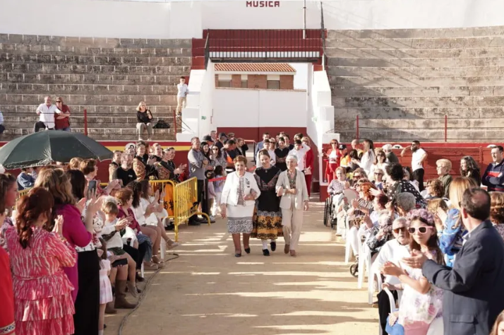

La Fiesta del Mayo Manchego es una Fiesta de Interés Turístico Nacional que rememora la antigua festividad de los mayos en la región de La Mancha que se celebra actualmente en el municipio español de Pedro Muñoz. Las fiestas empiezan el 30 de abril hasta el 1 de mayo, pero se organiza una degustación de gastronomía y vino manchego durante unos cinco días. También se organizan concursos gastronómicos y se organiza el 1 de mayo un festival de baile folclórico en la plaza de toros de la localidad. La fiesta tal como se la conoce hoy día tuvo su primera edición en el año 1964.

En 1964 el entonces alcalde de Pedro Muñoz, Luis Cepedano, reunió una comisión para crear algún evento que pudiera rememorar la vieja tradición, entonces perdida, de la ronda de los mayos. En aquella reunión se decidió crear un concurso local en la Plaza de España para los distintos grupos folclóricos que se presentasen. Durante los primeros años se celebró en la plaza, hasta que en 1966 el concurso se convirtió de ámbito regional y se trasladó de allí a la plaza de toros.
En las primeras cinco ediciones se celebró el concurso de baile folclórico el 30 de abril y a partir de entonces se trasladó al 1 de mayo. En 1969 no se pudo celebrar debido al cambio de alcalde que coincidió con esas fechas y en 1988 se celebró el 25 aniversario de la fiesta, vistiéndose para la ocasión todas las damas de anteriores ediciones con el traje tradicional y de igual forma se hizo en el 50 aniversario en 2013. En 1992 se declaró Fiesta de Interés Turístico Regional y es el 26 de abril de 2019 cuando se declara Fiesta de Interés Turístico Nacional.[1][2]
La noche del 30 de abril la gente se reúne junto a la ermita de Nuestra Señora de los Ángeles para el concurso de farolas y para cantar los mayos a nuestra patrona, la Virgen de los Ángeles, una canción que en realidad se trata del himno de los mayos a la virgen de los Ángeles pero que se modifica para adaptarlo al nombre de cada dama.
Las farolas se engalanaban antiguamente para sorprender a la moza pretendida, hoy en día, tras cantarle a la Virgen el mayo, se procede a un concurso local de farolas.En este concurso participan, colegios, asociaciones, grupos locales, etc.
Tras esto se hace la ronda a las damas. Se hace una visita a cada dama y se le cantan los mayos y en su casa invitan a comida y zurra a los que se las canten, esto pretende imitar la ronda que hacían los mozos (solteros) para pretender a las mozas que les gustaban.

El festival de baile folclórico se celebra en la plaza de toros cada 1 de mayo. Lo presenta un pregonero y en un escenario los distintos grupos folclóricos invitados de toda España muestran los bailes tradicionales de su tierra en el festival y, el grupo folclórico local baila la jota manchega y otros bailes tradicionales de la región. Todo el pueblo se reúne junto a las damas representantes de cada año y autoridades para disfrutar de esta fiesta tradicional.